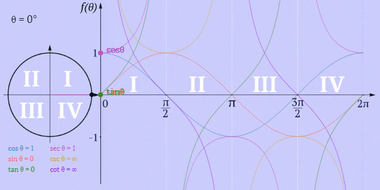

Learn Trigonometry
Learn Trigonometry
Learn complete trigonometry from start to finish with interactive visuals, engaging explanations, and a necessary pinch of history. After all, there is no fun in learning mathematics if we don't know how we got there in the first place!
And let me remind you: mathematics is a human-made subject that developed through observing and understanding nature. This website breaks trigonometry down into many small, manageable topics, making it easier for anyone—even children—to understand and master the subject simply by following along.You are going to fall in love with this graph on the right side.
Q. How will you get this ?
- interactive Visual Explanations
- Notes for Each Section
- Videos to get into depth
- Questions
